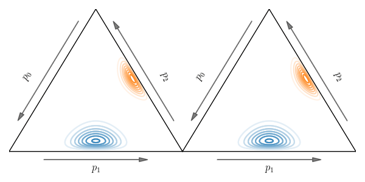

About me
I am an associate professor in statistics at the Department of Computer and Mathematical Sciences,
University of Toronto Scarborough and the Department of Statistical Sciences, University of Toronto. I also
hold a non-budgetary cross appointment at the
Department of Computer Science.
Before joining U of T in July 2018, I was a non-tenure track assistant professor in financial mathematics at
the
Department of Mathematics, University of Southern California, mentored
by
Jin Ma and
Jianfeng Zhang.
I received my PhD in Mathematics from the
University of Washington in 2016
under the supervison of
Soumik Pal. I also completed an MPhil
in Mathematics at
The Chinese University of Hong Kong under
the guidance of
Ka Sing Lau.
I am an associate editor of the journal
Information Geometry (2022-present).
I encouarge you to submit your work to this journal. Please don't hesitate to let me know if you have any questions.
Research
Research interests:
Mathematical finance, probability, optimal transport, information geometry, and their applications.
Google schole profile:
arXiv profile:

This figure illustrutes on the simplex the
primal and
dual displacement interpolations between probability distributions which
are key components of the geometry of the
Bregman-Wasserstein divergence. Image credit: Amanjit Singh Kainth.
Funding:
My research is partially supported by
NSERC Discovery Grant (RGPIN-2019-04419).
In 2020 I was happy to receive a
Connaught New Researcher Award.
I also gratefully acknowledge support from the
Data Science Institute
Seed Funding for Methodologists (2022).
PhD students: